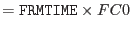
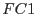
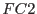

XMM-Newton Science Analysis System
epexposure (epexposure-0.14) [xmmsas_20170112_1337-16.0.0]
Output Files
- Filtered (=CCD specific) auxiliary file(s)
- CCD specific frames list(s) with columns FRAME, TIME,
NEPDH, NEVENTS, NBADEVTS, FLAG,
NDISCLIN, FC1, FC2
- CCD specific EXPOSURE extensions (added to the unmerged event lists).
As epframes
has already created such an extension and has filled
in columns TIME, TIMEDEL
 and
FRACEXP for FRAME numbers listed in the CCD specific event
list, this exposure extension will be further modified by
epexposure: The number of frame counters will be increased to
cover all changes in livetime factors and the FRACEXP will be
multiplied by  and .
XMM-Newton SOC/SSC -- 2017-01-12